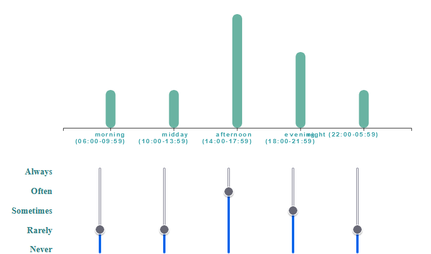
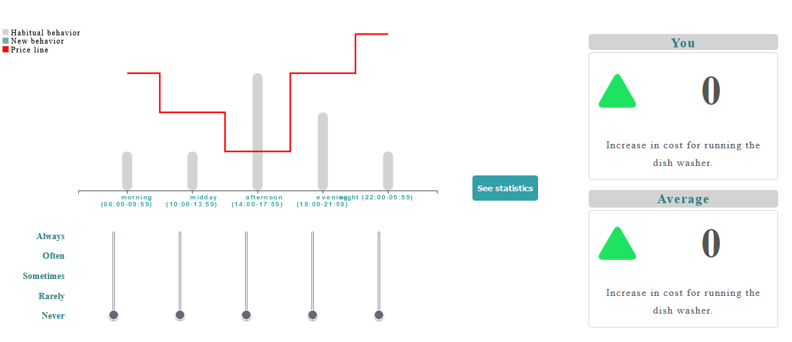

This part asks you to provide some information on the use of the {{appliance}} in your household.
Before proceeding with the actual questions, you will be presented with a short tutorial to familiarise yourself with the interface.
In the following part of the survey, you will be asked to indicate when you habitually use the {{appliance}} during the day.
Through this interface you can specify how often you use your {{appliance}} at different times of the day.
To do this, you can move the slider corresponding to the time of day up or down.

You will then be presented with some hypothetical scenarios (e.g. variable electricity cost, electricity production from renewable sources)
for which you will have to indicate whether and how you would change your {{appliance}} usage
habits in response to the information provided.
To do so, please follow the instructions below:
Use the sliders again to indicate whether and how you want to change your habits.
Once you have positioned the sliders according to your preferences, press the "see statistics" button. In about 2 seconds,
the impact (e.g. costs, green energy consumption) that can be achieved by changing your habits will be estimated and displayed
in the right-hand pane.
If you are not satisfied, you can change your habits again using the sliders and recalculate your performance up to a maximum of 3 times.
Once you have completed the experiment you can proceed by pressing the “next page” button.

NOTE: Try to answer as realistically as possible, assuming that the scenarios presented are indeed real.